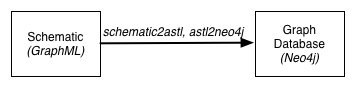

Introduction
We are interested in reasoning about how the topology (connectivity) of assets within the electrical power grid affects physical, economic, and security measurements. We therefore introduce a domain-specific language whose intent is to allow us to analyze thse different aspects of power systems. When applied to the power grid, this language will allow us to analytically evaluate the design and ongoing state of generation, substation, and distribution networks relative to architectural, physical, and security tradeoffs.
Within the course of this small tutorial, we will demonstrate how this language may be used immediately for a variety of tasks including (1) dependency analysis, (2) network inventory generation, and (3) network diagramming.
Requirements
This module has the following requirements:
- xsltproc: We use XSLT to transform various views of the cyber-physical system.
- yEd: We use yEd to create schematics for cyber-physical constructs.
- Neo4j: We use Neo4j to query different cyber-physical constructs.
Our Approach
Practitioners have a wide variety of views of a transmission substation, each of which encode a wide variety of relations at a variety of different levels of granularity. For example, a transmission substation may have a one-line diagram (physical relations) and a network diagram associated with it (cyber relations).
We interpret each of these diagrams as a visual representation of a database of relations that may be queried and used in reasoning about the state of the cyber-physical systems within the power grid. One can compose these relations in a large variety of ways and in this sense, the language is extensible. On the other hand certain constructs---subgraphs of assets and relations among those assets---are more common than others within power system design and we can represent these as a construct. Moreover, the relations within a graph may yield certain behavioral properties that we may capture within a set of functions.
Our Focus for This Release
The image below shows our focus for this release: the ability to create schematics of cyber-physical constructs and operate upon those constructs within a graph database. This release shows initial results with a small example that enables practitioners to diagram cyber-physical networks for industrial control systems, and perform basic analyses by querying a graph database of these constructs.

Our focus for this release: the ability to create schematics of cyber-physical constructs and query constructs within a graph database.
Specifically, we create visual representations of cyber-physical constructs using GraphML (via yEd) and then translate those constructs into the analogue of an abstract syntax tree for a visual language (via the schematic2asl Makefile target). We then translate each of these syntax tree data structures into a Neo4j Cypher CREATE statement (via the asl2neo4j Makefile target). Once in the database, we can generate network inventories and perform basic dependency analyses.
Page last modified: March 19, 2014
CPTL: always work in progress packaged on March 19, 2014. Edited by and copyright 2013-2014 Gabriel A. Weaver except where otherwise noted.

CPTL Power Documentation is licensed under a Creative Commons Attribution-NonCommercial-ShareAlike 4.0 International License (With that said, we are amenable to commercialization).
This site includes material that has not been reviewed or approved by anyone at University of Illinois at Urbana-Champaign.